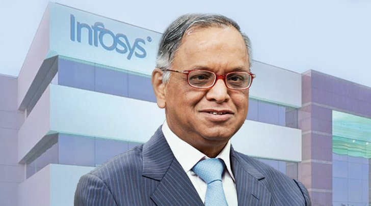

Narayana Murthy

Từ một vụ giam giữ bất công và sự ngược đãi của cảnh sát Bulgaria, Narayana Murthy – vốn là người khuynh tả – đã trở thành một trong những doanh chủ vĩ đại nhất của Ấn Độ.
Năm 1974, 15 năm trước khi sự kiện Bức tường Berlin sụp đổ, Murthy đã quá giang xe từ Paris về thành phố quê hương ông là Mysore ở Ấn Độ. Ông học ngành kỹ sư và từng làm việc ở Pháp nhưng sau đó lại quyết định trở về quê nhà. Một người lái xe cho Murthy đi nhờ và thả ông xuống một ga tàu tại Nis, một thị trấn nằm ở biên giới vùng Nam Tư cũ, nay thuộc biên giới giữa Serbia và Bulgaria. Lúc đó đã là 21 giờ ngày thứ Bảy, tất cả nhà hàng và ngân hàng ở đó đều đã đóng cửa.
8 giờ 30 sáng, khi con tàu Sofia Express tiến vào sân ga, chàng thanh niên 28 tuổi Murthy vẫn còn ngủ trên sàn nhà ga. Khi lên tàu, Murthy bước vào một toa đã có hai hành khách, gồm một nam và một nữ. Murthy nhớ lại: “Tôi bắt đầu nói chuyện bằng tiếng Pháp với cô gái trẻ. Cô ấy nói về sự khốn khổ khi phải sống trong một đất nước nằm trên ranh giới Rèm Sắt thời Chiến tranh Lạnh thì một nhóm cảnh sát tiến đến và cắt ngang câu chuyện. Về sau tôi mới nhận ra chính chàng trai trẻ ngồi cùng toa đã gọi họ đến. Mấy tay cảnh sát nghĩ rằng chúng tôi đang phê phán chính phủ cộng sản của Bulgaria.”
Sau khi cảnh sát đưa cô gái đi, họ lục soát túi xách và túi ngủ của Murthy. Murthy nhớ lại câu chuyện: “Tôi bị kéo lê dọc sân ga rồi bị tống vào một căn phòng chỉ có vài mét vuông, sàn gạch thì lạnh lẽo và chỗ đi vệ sinh chỉ là một cái lỗ khoét trên góc sàn. Tôi đã bị giam trong căn phòng lạnh lẽo khốn khổ đó, không có thức ăn và nước uống trong suốt hơn 72 giờ đồng hồ. Khi tôi đã đánh mất toàn bộ hy vọng được nhìn thấy thế giới bên ngoài thì cánh cửa buồng giam bật mở. Họ lôi tôi lên một chuyến tàu chở hàng sắp rời ga, rồi nhốt tôi vào toa của ông trưởng tàu và thông báo rằng tôi sẽ được thả trong vòng 20 tiếng nữa sau khi tàu đến Istanbul, Thổ Nhĩ Kỳ. Những lời cuối cùng của tay trưởng tàu vẫn còn vang vọng bên tai tôi – ‘Anh đến từ nước bạn Ấn Độ nên chúng tôi mới thả cho anh đi!’”
“Hành trình đến Istanbul thật cô đơn và tôi đói lả cả người.” Murthy kể lại: “Chuyến đi dài, cô đơn và lạnh giá đó đã khiến tôi suy nghĩ kỹ càng về niềm tin của tôi đối với chủ nghĩa cộng sản. Sáng sớm một ngày thứ Năm âm u, sau hành trình đói khát kéo dài 108 tiếng, tôi đã xóa sạch những mảnh vụn cuối cùng của sự ủng hộ đối với phe cánh tả. Tôi kết luận rằng chỉ có tinh thần doanh nhân mới có thể tạo ra nguồn việc làm dồi dào và đó là con đường khả thi duy nhất để xóa bỏ đói nghèo trong xã hội.”
Cuối cùng, sự kiện này đã khai sinh một trong những doanh nghiệp thành công nhất của Ấn Độ. Murthy cùng sáu người đồng nghiệp đã thành lập Infosys, một công ty phát triển phần mềm và tư vấn công nghệ thông tin với số vốn chỉ vỏn vẹn 250 đô-la tiền mặt vào năm 1981. Ngày nay, Infosys là tập đoàn công nghệ toàn cầu với doanh thu sáu tỷ đô-la và có hơn 130 nghìn nhân viên.
Kiên cường hơn bất kỳ doanh chủ nào khác, Murthy đã vượt qua tất cả các chướng ngại trong việc xây dựng Infosys trong một môi trường hoàn toàn không thân thiện đối với các công ty khởi nghiệp. Cuối cùng, ông đã chứng tỏ Ấn Độ có thể cạnh tranh với thế giới bằng cách tham gia vào một sân chơi vốn được coi là dành riêng cho phương Tây. Với cương vị CEO của công ty trong hơn 21 năm, ông đã góp phần đẩy mạnh cuộc cách mạng dịch vụ gia công và mang về hàng tỷ đô-la cho nền kinh tế Ấn Độ, biến đất nước này thành trung tâm hành chính của thế giới.
Murthy được ca tụng là một nhà lãnh đạo khiêm nhường, không mưu cầu danh lợi cho bản thân. Ông đã lùi lại để đưa Nandan Nilekani, người đồng sáng lập Infosys lên làm CEO từ năm 2002. Bốn năm sau, mặc dù ông đã từ bỏ vị trí điều hành Infosys nhưng ông vẫn luôn là vị chủ tịch danh dự của công ty.
Ông có nhận ra một xu hướng cụ thể nào ở thời điểm đầu những năm 1980 khi ông quyết định mở công ty riêng không?
Năm 1980 là thời điểm có ba xu hướng đã thể hiện rất rõ ràng. Đầu tiên là xu hướng tách bạch phần mềm và phần cứng nhờ có một phiên tòa ở nước Mỹ quy định rằng, các công ty bên thứ ba chuyên sản xuất phần mềm có thể chạy sản phẩm của họ trên phần cứng do các nhà sản xuất phần cứng cung cấp. Trước đó, các hãng sản xuất phần cứng cũng chính là nhà cung cấp phần mềm.
Xu hướng thứ hai chúng tôi nhận ra là sự xuất hiện của máy tính siêu nhỏ và có giá rẻ hơn rất nhiều so với các máy tính lớn (mainframe) nhưng có hiệu năng và tính linh động cực cao. Hai tập đoàn Data General và Digital Equipment đã giới thiệu những chiếc máy này đến với thị trường. Sau cùng, chúng tôi nhận thấy Ấn Độ đang đào tạo ra số lượng kỹ sư cực lớn nhưng họ hầu như không có bất kỳ cơ hội làm việc nào cả. Những chiếc máy tính siêu nhỏ thần kỳ đã giúp giảm đi rất nhiều tổng giá thành để sở hữu một chiếc máy tính. Chúng tôi nhận ra ngày càng có nhiều tập đoàn muốn sử dụng những chiếc máy tính siêu nhỏ và việc lập trình phần mềm cho các tập đoàn đó đã trở thành cơ hội rất lớn.
Chúng tôi nói với nhau đây là cơ hội lớn để phát triển phần mềm ở phương Tây, đặc biệt là ở Mỹ. Ngay ở Ấn Độ, chúng tôi cũng có rất nhiều kỹ sư sẵn sàng viết phần mềm cho khách hàng nước ngoài. Vì vậy, tôi tìm kiếm một nhóm các thanh niên và rủ rê họ: “Sao chúng ta không thành lập một công ty nhỉ! Chúng ta sẽ phát triển các ứng dụng phần mềm cho các tập đoàn phương Tây.” Đó là lý do chúng tôi thành lập Infosys.
Con đường trở thành doanh nhân của ông khá thú vị. Có phải ông từng là một người theo cánh tả và chỉ miễn cưỡng trở thành doanh nhân sau khi bị đối xử tệ bạc bởi những người cộng sản?
Khi còn là sinh viên, tôi là người theo cánh tả vì ở Ấn Độ thời đó, việc trở thành người theo cánh tả rất dễ dàng. Tất cả chúng tôi đều chịu ảnh hưởng từ Jawaharlal Nehru[47], người theo đuổi chủ nghĩa xã hội. Ông ấy có mối quan hệ thân thiết với Liên bang Xô Viết nên chúng tôi dễ dàng bị ảnh hưởng bởi phe cánh tả. Trong bất kỳ xã hội hậu thuộc địa nào, chủ nghĩa xã hội luôn hấp dẫn hơn chủ nghĩa tư bản rất nhiều.
Khi bị tạm giam, tôi không được ăn uống trong suốt 76 giờ liền. Gần như đó là chiếc đinh cuối cùng đóng vào cỗ quan tài chôn vùi tình cảm tôi dành cho cánh tả. Tôi đã nghĩ rằng nếu đây là cách mà xã hội cộng sản đối xử với những người bạn của họ thì tôi không muốn là một phần của xã hội đó. Tôi không muốn đến bất kỳ nơi nào giống như thế. Trên chuyến tàu trở về Ấn Độ, tôi đã tự nhủ với bản thân: “Mình sẽ thử nghiệm việc tạo ra tài sản một cách hợp pháp và có đạo đức.” Đó là cách tôi đã thay đổi từ một người cánh tả đầy băn khoăn trở thành một quý ông tư bản. Đó là bước ngoặt của cuộc đời tôi.
Nhưng ông không thành lập công ty ngay lúc đó, đúng không?
Cùng với một trong các giáo sư của mình, tôi đã lập ra một trung tâm nghiên cứu chuyên sử dụng toán học, lý thuyết hệ thống và khoa học máy tính để giải quyết những vấn đề vĩ mô của các hệ thống công lập. Khi đó, tôi còn quan tâm nhiều tới các hệ thống công. Nhưng tôi nhanh chóng nhận ra tất cả những báo cáo chúng tôi thực hiện cuối cùng đều đóng bụi trong các kệ tủ của các văn phòng chính phủ. Vì vậy, tôi quyết định sẽ không phí hoài thời gian nữa. Tôi phải tham gia vào lĩnh vực tư.
Tôi muốn tìm hiểu các doanh nghiệp làm việc như thế nào; làm thế nào họ có được khách hàng và thu hút nhân sự. Năm 1977, tôi giữ vị trí trưởng bộ phận phát triển doanh nghiệp của một công ty tư nhân tại Mumbai. Năm 1981, tôi quyết định thành lập Infosys vì tôi muốn thử nghiệm việc tạo ra công ăn việc làm cũng như tài sản một cách hợp pháp và có đạo đức. Đó là cách tôi thu hút những người trẻ làm việc cùng với tôi và chúng tôi đã sáng lập ra Infosys như vậy đấy.
Vào đầu những năm 1980, Ấn Độ không phải là một “vùng đất hứa” với những công ty khởi nghiệp. Tôi biết là đã có rất nhiều khó khăn và chướng ngại vật trên con đường xây dựng công ty của ông. Ông có thể chia sẻ về những điều đó không?
Vào thời điểm đó, khuynh hướng chống lại giới kinh doanh ở Ấn Độ diễn ra rất mạnh mẽ. Trước thời điểm cải cách kinh tế năm 1991, sự chống đối diễn ra mạnh mẽ đến mức hầu hết mọi người đều sợ hãi và không dám kinh doanh tại Ấn Độ. Tôi đã phải đi Delhi 40 hay 50 lượt trong suốt ba năm chỉ để có được giấy phép nhập khẩu một chiếc máy tính trị giá khoảng 300 ngàn đô-la; rồi mất thêm khoảng 15 ngày để ngân hàng trung ương cấp phép đổi ngoại tệ cho chuyến đi công tác nước ngoài kéo dài trong một ngày; phải mất hai, ba năm chúng tôi mới lắp được đường dây điện thoại.
Có một câu nói đùa như thế này ở Ấn Độ: Một nửa dân số chờ đợi để có điện thoại và một nửa còn lại đang chờ điện thoại có tín hiệu. Mọi hoàn cảnh lúc đó hoàn toàn chống lại chúng tôi. Tuy nhiên, tôi nhận ra có một cơ hội sắp bùng nổ trong lĩnh vực phát triển phần mềm cho phương Tây, đặc biệt là ở Mỹ. Ngày 7 tháng Bảy năm 1981, chúng tôi thành lập Công ty Infosys. Trong suốt 9 năm đầu tiên, chúng tôi phát triển rất chậm bởi tất cả những lý do tôi đã chia sẻ.
Mọi chuyện đã thay đổi vào năm 1991, khi cuộc cải cách kinh tế diễn ra. Năm 1990, chúng tôi đã đạt lợi nhuận gần nửa triệu đô-la mỗi năm và bắt đầu có lời. Một trong những ông trùm kỹ nghệ ở Ấn Độ đã đề nghị mua lại công ty với giá một triệu đô-la. Một số đồng nghiệp của tôi cho rằng đó là món tiền cực kỳ lớn mà chúng tôi chưa bao giờ có nên họ muốn bán công ty. Chúng tôi đã có bốn giờ thảo luận và tranh cãi trong một buổi sáng Chủ nhật ở Bangalore. Khi đến lượt phát biểu của mình, tôi chỉ nói rằng: “Chúng ta đã đi trên con đường này suốt chín năm, tôi tin rằng chúng ta sắp nhìn thấy ánh sáng cuối đường hầm. Vì vậy, tôi không muốn bán công ty. Còn nếu các anh muốn bán, tôi sẽ mua cổ phần của các anh.”
Bọn họ rất kinh ngạc vì họ không nghĩ tôi có đủ từng ấy tiền. Họ yêu cầu tôi lý giải cho sự tự tin của mình. Tôi bắt đầu giải thích cho họ thấy mọi chuyện ở Ấn Độ đang thay đổi như thế nào và ngay cả các chính trị gia và những kẻ quan liêu nhất cũng bắt đầu cảm thấy bức xúc với những vấn đề đang tồn tại. “Không sớm thì muộn và tôi nghĩ sẽ sớm thôi, tất cả nút thắt cổ chai trong công việc làm ăn của chúng ta sẽ được loại bỏ. Vì vậy, tôi không muốn bỏ công ty này.”
Trong vòng một giờ đồng hồ, cuối cùng tất cả mọi người đều đồng ý không bán cổ phần của mình. Đến ngày nay, chúng tôi đã có giá trị vốn hóa thị trường ở mức 36 tỷ đô-la. Nói cách khác, một đô-la vào thời điểm đó đã trở thành 36 nghìn đô-la ngày nay. Bây giờ, mọi người đều nói tôi là một thiên tài. Nhưng tất cả chỉ vì tôi quá gắn bó với công ty và những sáng kiến tôi có đều xuất phát từ hy vọng rằng mọi chuyện sẽ dần trở nên sáng sủa hơn.
Điều gì đã khiến ông tự tin vào quyết định không bán công ty?
Trong số bảy người đồng sáng lập, tôi là người đã có một vài sự hy sinh. Tôi đã từ bỏ công việc ở vị trí cấp cao trước đó. Khi mở công ty, tôi có hai đứa con và vợ của tôi đã nghỉ làm. Tôi hiểu rằng tôi buộc phải thành công vì sẽ không dễ dàng để quay đầu lại. Với các đồng nghiệp khác, họ mới chỉ bắt đầu, chức vụ còn khá thấp vì vậy cơ hội nghề nghiệp của họ còn rất nhiều. Thứ hai, bản chất của tôi là một người lạc quan. Tôi càng làm việc nhiều thì càng gặp nhiều khó khăn hơn nhưng cũng vì thế mà càng trở nên mạnh mẽ hơn. Tôi nói với họ: “Chúng ta đã chạy ma-ra-tông như thế này trong suốt chín năm rồi.”
Có một số chuyện xảy ra khiến chúng tôi tự tin rằng mọi việc sẽ thay đổi. Vào khoảng năm 1985 hay 1986, chính phủ đã có những động thái giúp quá trình nhập khẩu hàng hóa trở nên dễ dàng hơn. Thứ hai, họ cũng tạo một số điều kiện đặc biệt cho chúng tôi vì chúng tôi xuất khẩu phần mềm. Anh có thể nhập khẩu phần mềm từ Mỹ với giá trị bằng với lượng ngoại tệ mà anh thu được từ việc xuất khẩu rồi bán chúng ở Ấn Độ để tạo ra lợi nhuận đáng kể. Vào thời đó đã có một số dấu hiệu, tuy chưa nhiều, cho thấy mọi chuyện sẽ được cải thiện. Là một người lạc quan, tôi tin rằng mọi chuyện sẽ tốt đẹp hơn. Và quan trọng hơn, tôi thích công việc mà chúng tôi đang làm và nhu cầu của chúng tôi cũng không cao. Vợ và các con tôi sống cuộc đời rất giản dị. Sự thật là gia đình tôi không ai có xe hơi trong suốt mười năm đầu bước vào kinh doanh. Nhưng chúng tôi thấy mọi chuyện vẫn ổn.
Tôi sinh ra trong một gia đình làm nghề giáo. Chúng tôi không phải là dân kinh doanh. Tôi là người đầu tiên trong gia đình làm trong lĩnh vực này. Chúng tôi rất vô tư và cũng không có gì để mất. Chúng tôi không biết việc kinh doanh khó khăn như thế nào, vì vậy tôi bước chân vào lĩnh vực kinh doanh với tâm thế rất thoải mái.
Ông còn đối mặt với những khó khăn nào nữa không?
Năm 1991, Ấn Độ rơi vào tình trạng nguy hiểm về dự trữ ngoại hối. Chúng tôi chỉ được đổi ngoại tệ trong 15 ngày để xuất khẩu. Chính phủ Ấn Độ phải dùng toàn bộ số vàng dự trữ để cam kết với Ngân hàng Anh Quốc khi vay tiền. Đó là thời điểm chính phủ nhận ra chính sách của họ ngớ ngẩn như thế nào và đã thực hiện tự do hóa nền kinh tế một cách đáng kể. Ví dụ, trong ngành của tôi, họ đã loại bỏ hoàn toàn vấn đề cấp phép. Sau đó, họ xóa bỏ văn phòng chuyên kiểm soát các vấn đề về vốn do một quan chức của Chính phủ Ấn Độ điều hành. Vị quan chức này không hề có hiểu biết về cách thị trường vốn vận hành, nhưng ông ta lại là người quyết định trị giá cổ phiếu của tất cả các công ty mới. Ông ta hiếm khi đưa ra mức giá cao hơn giá trị gốc của cổ phiếu.
Vì vậy, các doanh nhân không hào hứng với việc chào bán cổ phiếu ra công chúng vì họ sẽ phải bán ra phần lớn số cổ phiếu mà số tiền kiếm được lại rất ít. Sau đợt cải cách thì doanh nghiệp và các ngân hàng đầu tư đã được quyết định giá và có toàn quyền kiểm soát trong lần phát hành cổ phiếu đầu tiên.
Sau cùng, chính phủ cũng cho phép các doanh nghiệp được quyền đổi ngoại tệ để đi nước ngoài hoặc mở văn phòng ở thị trường ngoài nước.
Năm 1991, các cuộc cải cách này đã thay đổi toàn bộ những công ty như Infosys vì chúng tôi có thể đi nước ngoài, mở văn phòng và thuê cố vấn để cải thiện chất lượng quy trình và thương hiệu một cách dễ dàng. Vì thế, kể từ năm 1992 trở đi, Infosys mới bắt đầu phát triển.
Chúng tôi phải có một số giải pháp sáng tạo để có thể hấp dẫn khách hàng nước ngoài. Năm 1981, khi chúng tôi đến thăm các khách hàng ở Mỹ, họ đã mời chúng tôi những ly trà rất ngon và nói với chúng tôi: “Đừng gọi cho chúng tôi! Chúng tôi sẽ gọi các anh khi cần.” Chúng tôi trở về nhà và nói với nhau: “Những rào cản đối với kinh doanh ở Ấn Độ đang dần được dỡ bỏ. Chúng ta phải thay đổi cách phát triển phần mềm và trở nên hấp dẫn hơn trong mắt khách hàng.”
Đó là thời điểm mà chúng tôi khai sinh Mô hình Hoạt động Toàn cầu (Global Delivery Model). Mô hình này hiểu một cách đơn giản là hoạt động chia các dự án phát triển phần mềm quy mô lớn ra thành hai tầng hoạt động. Tầng hoạt động đầu tiên có mức độ tương tác lớn với khách hàng, do đó phải được thực hiện tại vị trí hoặc gần vị trí của khách hàng. Tầng thứ hai là tầng có rất ít sự tương tác, vì vậy có thể được thực hiện từ những trung tâm phát triển được đặt ở những nước như Ấn Độ.
Trong vòng hai, ba tháng đầu tiên, khi đang ở giai đoạn “bảo hành phản ứng nhanh” của dự án, chúng tôi sẽ cử nhân viên của mình thường trực với khách hàng để sẵn sàng xử lý nhanh nếu có vấn đề phát sinh. Ngoài ra, các hoạt động như phát triển cấu trúc, thiết kế chức năng, thiết kế kỹ thuật, thiết kế cơ sở dữ liệu, lập trình, thử nghiệm, kiểm tra chất lượng, hoàn thiện hồ sơ và bảo hành dài hạn có thể được thực hiện từ xa bởi các trung tâm có quy mô linh hoạt với đội ngũ kỹ sư tài năng của Ấn Độ.
Trong một dự án cụ thể, 20-30% sức lực sẽ được dành cho các hoạt động đầu tiên cần được thực hiện tại địa điểm của khách hàng. Phần còn lại của dự án có thể được thực hiện từ xa. Khách hàng sẽ có các phần mềm chất lượng tốt hơn được bàn giao đúng thời hạn và trong mức chi phí đã được ghi cụ thể trong ngân sách. Để minh họa, vào cuối năm 1990, chỉ có khoảng 45-50% số dự án phần mềm được hoàn tất đúng thời hạn. Phần lớn các dự án trên thực tế đều bị hủy bỏ giữa chừng. Hiện giờ ở Infosys, 92% số dự án của chúng tôi với khách hàng được bàn giao đúng thời hạn và đúng ngân sách.
Điều đó có được là nhờ chúng tôi đã đầu tư không ít chi phí để đào tạo nhân viên của mình. Chúng tôi có trung tâm đào tạo lớn nhất thế giới tọa lạc tại Mysore. Chúng tôi đào tạo 50 nghìn kỹ sư một ngày. Thứ hai, chúng tôi đầu tư rất nhiều vào quy trình và hệ thống kiểm soát chất lượng. Giống như trường hợp Deming[48] bị nước Mỹ từ chối nhưng lại được các công ty Nhật Bản săn đón, các công ty Ấn Độ đã nhanh chóng áp dụng mô hình khả năng tối ưu hóa của Viện Kỹ thuật Phần mềm tại Đại học Carnegie Mellon. Chúng tôi đã áp dụng chỉ tiêu ISO 9001; chúng tôi học theo các ý tưởng của Đại học Carnegie Mellon và thực hiện các nguyên tắc của Malcolm Baldrige[49]. Chúng tôi đã cải thiện chất lượng của Infosys. Chúng tôi đầu tư rất nhiều vào công nghệ và công cụ để tăng hiệu quả sản xuất. Ở Bangalore, chúng tôi có cơ sở với tổng số chuyên gia về phần mềm là 20 nghìn người. Ở Pune, chúng tôi đã xây dựng cơ sở hạ tầng cho 25 nghìn chuyên gia phần mềm. Chúng tôi có 11 trung tâm ở Ấn Độ và nhiều trung tâm khác đặt tại Trung Quốc, Melbourne, Tokyo và Cộng hòa Séc. Khi anh có người tài và đào tạo họ tốt, họ sẽ cải thiện được khả năng thành công của tất cả các dự án.
Có thời điểm ông đã quyết định niêm yết công ty trên sàn NASDAQ của Mỹ. Vì sao ông lại quyết định như vậy?
Năm 1996, chúng tôi bàn với nhau: nếu muốn củng cố niềm tin của khách hàng thì việc niêm yết công ty trên thị trường chứng khoán của Mỹ là một ý tưởng không tồi. Như vậy, khách hàng có thể xem cổ phiếu của chúng tôi được giao dịch mỗi ngày. Chúng tôi có trách nhiệm giải trình với SEC và họ tuyên bố “công ty này kinh doanh nghiêm túc và họ là những người có thể tin tưởng được”. Vì vậy, kể từ năm 1996, chúng tôi tự nguyện viết lại báo cáo tài chính theo các nguyên tắc kế toán của Mỹ. Ngày 11 tháng Ba năm 1999, chúng tôi được niêm yết trên sàn NASDAQ và khi đang ngồi trên chiếc ghế cao trong trụ sở của NASDAQ thì tôi được hỏi về ý nghĩa của việc Infosys được niêm yết ở trên sàn NASDAQ. Tôi xin mượn đại ý câu nói của Neil Amstrong khi ông là người đầu tiên đặt chân lên mặt trăng để trả lời cho những thắc mắc này như sau: “Đây chỉ là một thay đổi nhỏ đối với NASDAQ nhưng là một bước chuyển biến lớn của Infosys và nền công nghệ phần mềm của Ấn Độ.”
Còn về vốn thì sao? Làm thế nào ông kiếm được vốn để phát triển công ty?
Tôi đã sớm nhận ra vốn không phải là thế mạnh của chúng tôi. Chúng tôi chỉ có khoảng 10 nghìn rupi[50] và theo tỷ giá ngày nay là khoảng 250 nghìn đô-la. Tôi biết số tiền đó không đủ để phát triển gì cả. Vì vậy, tôi đã thương lượng với khách hàng đầu tiên. Tôi nói với họ: “Các anh phải cho tôi tạm ứng trước một khoản và trả tiền cho chúng tôi vào ngày cuối cùng của tháng.” Chúng tôi đã sống sót theo cách đó.
Lúc đầu, chúng tôi phải mất đến ba năm mới có được giấy phép để nhập khẩu một chiếc máy tính cũng như để các đồng nghiệp của tôi tới New York và phát triển phần mềm tại đấy. Tôi ở lại Ấn Độ vì tôi muốn có được giấy phép để nhập một chiếc máy tính và việc này cũng kéo dài tận hai năm rưỡi. Tôi đã thu xếp đủ vốn vay từ một tập đoàn phát triển công nghiệp và tài chính của nhà nước để nhập chiếc máy này. Vào thời điểm đó, chúng tôi phải vay một khoản tiền tương đương 350 nghìn hay 400 nghìn đô-la. Nhưng toàn bộ vốn hoạt động đều do khách hàng chi trả cho chúng tôi.
Ở Mỹ, với khả năng tiếp cận dễ dàng các quỹ đầu tư mạo hiểm và một hệ thống đại học tốt, có vẻ như mọi việc sẽ dễ dàng hơn với những doanh chủ?
Hầu như rất hiếm ngân hàng nào chịu cho chúng tôi vay vì các ngân hàng đều muốn chúng tôi thế chấp cho bất kỳ khoản vay vốn nào. Nếu anh muốn nhập khẩu một chiếc máy tính, họ sẽ lấy nó là vật thế chấp và nếu anh không trả nổi khoản vay, họ sẽ tịch thu nó. Khi anh muốn mua một cỗ máy hay xây một nhà xưởng cũng vậy. Nhưng đối với các sản phẩm phần mềm, họ không có gì để làm vật thế chấp vì họ không hiểu được giá trị của phần mềm. Vì vậy, chuyện vay vốn từ ngân hàng gần như là bất khả thi với chúng tôi. Chẳng có khoản vay nào dành cho các doanh nghiệp phần mềm cả. Đó là lý do vì sao chúng tôi đã thuyết phục cơ quan chính phủ rằng họ nên nhìn nhận lại về phần mềm và cho chúng tôi vay tiền.
Chúng tôi cũng không có cơ sở hạ tầng để truyền dữ liệu. Có thể anh không tin nhưng chúng tôi từng phải dùng máy fax để gửi phần mềm tới khách hàng. Chúng tôi gửi mã nguồn tới khách hàng qua máy fax. Sau đó, chúng tôi chuyển sang gửi phần mềm bằng băng từ nhưng quy trình lấy dấu thông quan từ hải quan Ấn Độ để chuyển băng cho khách hàng cũng lắm nhiêu khê. Thời gian có thể kéo dài từ một tuần tới mười ngày để các đoạn băng này được hải quan thông qua. Năm 1983, một trong các khách hàng của chúng tôi đã đề nghị như sau: “Các anh rất thông minh, vì vậy chúng tôi tin các anh. Tôi sẽ cho anh mượn một chiếc máy tính cỡ lớn đã qua sử dụng để các anh có thể ngồi tại Bangalore để viết phần mềm. Nhưng tôi muốn mỗi ngày các anh phải báo cáo tiến độ công việc qua điện thoại.” Nhưng chúng tôi không thể lắp được điện thoại trong vòng hai năm và vì vậy không thể bắt đầu dự án ở Bangalore.
Khi không có vốn làm ăn từ ngân hàng hay các khoản vay vốn đầu tư khác cũng như không có văn phòng lớn, chúng tôi đã gặp nhiều khó khăn trong việc thu hút nhân tài. Chúng tôi đã trải qua tất cả những chuyện này, nhưng nhóm của chúng tôi có một đặc điểm là các thành viên đều là những người thiết kế/lập trình viên xuất sắc. Mỗi khi tới các cơ sở đào tạo, chúng tôi thường yêu cầu sinh viên đưa ra một vài thuật toán trong khoa học vi tính và chúng tôi sẽ giải câu đố trước mắt họ. Chúng tôi phải tạo ra sự khác biệt trước những bộ óc thông minh nhất. Khi họ tận mắt chứng kiến bảy người trong nhóm đều giải đố cực nhanh, tất cả các sinh viên đều nghĩ: “Mấy anh chàng này thú vị đây, họ sẽ làm được những điều để đảm bảo cho chúng ta một tương lai tốt.” Đó là cách chúng tôi thu hút người tài vì chúng tôi không có văn phòng hào nhoáng, không có cơ sở hạ tầng và không có tài khoản lớn trong ngân hàng. Chúng tôi chẳng có gì cả.
Nhưng ông đã vượt qua tất cả các chướng ngại này. Đâu là bài học quan trọng nhất với ông trong việc sáng lập và phát triển Infosys?
Có rất nhiều bài học. Bài học đầu tiên là nếu anh muốn trở thành một doanh nhân thành công, anh phải có một ý tưởng mà giá trị kinh tế của nó đối với thị trường phải được diễn tả trong một câu ngắn gọn, không quá phức tạp. Nói theo cách khác, anh phải thể hiện được sự độc đáo trong ý tưởng của anh với khách hàng một cách dễ dàng.
Thứ hai, thị trường phải sẵn sàng để tiếp nhận ý tưởng của anh. Nếu thị trường chưa sẵn sàng, anh không thể thành công. Vào đầu những năm 1970, Philips xuất hiện và giới thiệu một sản phẩm máy tính cỡ nhỏ tuyệt vời. Sau đó, tại Mỹ, các tập đoàn như HP, Digital Equipment Corp và Data General cũng sản xuất và bán rất chạy loại máy tính cỡ nhỏ này. Philips đã mang đến một sản phẩm tốt nhưng họ không thành công vì người ta cho rằng việc mua một sản phẩm máy tính của Philips không phải là ý tưởng hay. Điều này có nghĩa là thị trường phải sẵn sàng để tiếp nhận và mua ý tưởng của anh.
Thứ ba, anh cần một nhóm cộng sự gồm những người có chung hệ giá trị có tính bền bỉ vì khởi nghiệp luôn mang trong nó sự trì hoãn. Anh phải hy sinh ngày hôm nay để gặt hái cho mai sau. Khởi nghiệp là hy sinh, là làm việc vất vả, là chịu đựng sự giận dữ, là sống xa cách gia đình... với tất cả hy vọng rằng có ngày anh sẽ được đền bù xứng đáng. Anh cần có hệ giá trị thật tốt vì xét cho cùng khởi nghiệp nghĩa là sẵn sàng trả giá để thực hiện niềm tin của anh.
Tôi kể một ví dụ đơn giản: nếu đang đi trên đường và nhìn thấy tờ 100 đô-la. Anh sẽ nghĩ ai đó đã đánh rơi tờ tiền này. Anh sẽ nhặt lên và mang tờ tiền đến đồn cảnh sát, như vậy người đã đánh rơi có thể lấy lại tiền. Nhưng tôi liền nói với anh: “Không, không. Chẳng có ai nhìn thấy nó ngoài hai chúng ta. Sao chúng ta không chia ra, anh 50 đô-la và tôi 50 đô-la?” Vậy là thang giá trị của anh rõ ràng tốt hơn của tôi khi anh sẵn sàng trả lại tờ 100 đô-la. Anh là một người trung thực. Anh cảm thông với người đã đánh rơi tờ 100 đô-la. Thang giá trị của anh đã được quy đổi sang một mức giá tương đương – cái giá anh chấp nhận bỏ qua để bảo vệ niềm tin của mình.
Khởi nghiệp là một hành trình mà khi đi trên đó, anh tin rằng bằng cách theo đuổi con đường này sẽ có một ngày anh thay đổi thế giới. Anh tin rằng sự thay đổi sẽ giúp anh trở nên tốt đẹp hơn. Nó có thể mang đến cho anh tiền và quyền lực hay bất kỳ thứ gì tương tự. Anh chấp nhận hy sinh rất nhiều hôm nay và sẵn sàng trả một giá khá cao. Vì vậy, cả nhóm làm việc của anh cũng phải có một hệ thống giá trị bền bỉ.
Cuối cùng, tốt nhất anh nên có những người có năng lực và khả năng bù đắp cho nhau trong nhóm những người sáng lập. Ví dụ, khi Paul Allen và Bill Gates sáng lập Microsoft, Paul Allen chăm lo việc phát triển phần mềm và Bill Gates lo việc bán sản phẩm. Năng lực của họ bổ sung cho nhau. Nếu cả hai người bọn họ chỉ tập trung vào phát triển phần mềm, tôi chắc chắn họ khó có thể thành công đến như vậy. Hoặc giả nếu cả hai người họ chỉ tập trung vào bán sản phẩm thì họ cũng sẽ chẳng có gì để bán. Vì vậy, tôi tin rằng anh phải gom đủ một nhóm người – những người có kỹ năng, trình độ và kinh nghiệm khác nhau và có thể bù trừ cho nhau. Đây là bốn điểm quan trọng tạo nên thành công của một doanh chủ.
Theo tôi, chỉ có một đối tượng duy nhất có thể nuôi sống tất cả chúng tôi, đó chính là khách hàng. Vì vậy, mỗi ngày trước khi dùng bữa tối, tôi đều nói lời cảm tạ tới khách hàng của mình. Chính nhờ họ mà tôi có bữa tối để ăn. Chúng tôi tập trung cao độ vào việc tạo thêm giá trị cho khách hàng và giành lấy niềm tin của họ. Niềm tin đó đến từ năng lực, tính cách và mối quan hệ của chúng tôi.
Bài học tiếp theo mà chúng tôi rút ra được là các nhà đầu tư hiểu rằng mọi doanh nghiệp đều có lúc thăng lúc trầm. Nhưng điều họ kỳ vọng ở anh là anh phải luôn đồng hành với họ. Họ muốn anh chủ động cập nhật những tin xấu với họ thật sớm. Ở Infosys, chúng tôi luôn tâm niệm hai điều: một là “Khi nghi ngờ, hãy nói ra” và thứ hai là “Hãy để tin tốt đi cầu thang bộ còn tin xấu đi bằng thang máy”.
Lĩnh vực kinh doanh của chúng tôi dựa vào con người. Trí tuệ con người tạo ra sự khác biệt. Nếu chúng tôi muốn có người tài gia nhập đội quân, chúng tôi phải có môi trường làm việc cởi mở, làm việc dựa trên năng lực, có thảo luận, có tranh luận và phục vụ số đông. Chúng tôi ứng xử với những người chuyên nghiệp với tác phong, danh dự và sự tôn trọng cần thiết. Mọi giao dịch đều được bắt đầu từ con số 0 và không mang theo bất kỳ sự thiên lệch nào từ các giao dịch trước đó. Mọi giao dịch đều được thảo luận trong một không gian thân thiện và lịch sự. Đó là lý do vì sao anh có quyền không đồng ý với tôi nhưng anh phải nói ra điều không hợp lý của tôi. Đây là điều cực kỳ quan trọng vì khi chúng tôi tạo ra một không gian làm việc như vậy, những người trẻ có thể đề xuất những ý tưởng mới. Họ sẽ cho rằng: “Lần trước ý tưởng của tôi bị loại vì nó chưa thực sự tốt nhưng lần này tôi có cơ hội thành công lớn hơn.”
Một điều nữa mà chúng tôi luôn tuân thủ là đảm bảo mọi giao dịch đều được quyết định dựa trên dữ liệu thực tế, bằng cách này anh mới có thể đưa ra được những quyết định dựa trên chất lượng công việc trước đó. Anh phải giúp mọi người hiểu được hệ thống giá trị của doanh nghiệp bằng những câu châm ngôn giản dị nhưng đầy sức mạnh. Một trong các châm ngôn của chúng tôi là “Chúng ta tin vào Chúa nhưng những người khác tin vào số liệu và dữ liệu trong thảo luận”.
Mọi sự thay đổi đều gây khó khăn với tất cả mọi người trong tổ chức. Ông đã đối mặt với sự thay đổi như thế nào khi công ty ngày một phát triển lớn mạnh?
Nút thắt lớn nhất mà tất cả chúng ta đều có chính là tâm trí của mỗi người. Tất cả các vấn đề đều do tâm trí của chúng ta sinh ra. Nếu có thể giải quyết vấn đề bên trong tâm trí, thì chúng ta có thể giải quyết mọi vấn đề bên ngoài. Hầu hết mọi người đều liên tục phải đấu tranh giữa tâm trí – động cơ tạo ra sự thay đổi – và định kiến. Định kiến là tập hợp các kinh nghiệm và giả định. Chỉ những ai có khả năng đánh bại các định kiến để nhường cho tâm trí lên ngôi thì mới có thể tạo ra sự tiến bộ.
Ở Infosys, hầu hết các vấn đề xảy ra đều vì chúng xuất phát từ tâm trí của chúng tôi. Tôi cũng nhận thấy các nhà lãnh đạo cần làm gương. Khả năng lãnh đạo sẽ tạo ra sự thay đổi to lớn. Nhiệm vụ cơ bản của một người lãnh đạo là truyền cảm hứng cho nhân viên để họ cảm thấy tự tin và muốn thực hiện những điều tưởng như bất khả thi. Robert Kennedy (em trai Tổng thống Mỹ John F. Kennedy) từng nói: “Hầu hết mọi người đều nhìn những sự việc đã xảy ra và hỏi tại sao. Còn tôi thường mơ về những việc chưa từng xảy ra và hỏi tại sao không?” Tôi nghĩ câu nói này định nghĩa vai trò của nhà lãnh đạo rất chính xác. Người lãnh đạo là người nghĩ đến những việc mà những người khác chưa từng nghĩ tới và hỏi tại sao không?
Để đạt được bất kỳ điều gì đáng giá, anh phải lao động chăm chỉ, toàn tâm và chấp nhận hy sinh. Nếu anh muốn nhân viên của mình dốc tâm cống hiến và làm việc chăm chỉ, họ phải có niềm tin không thể lay chuyển nơi bạn, giống như con người có niềm tin ở Thánh Moses vậy. Đức tin đó đến từ sự tin cậy.
Nếu anh muốn mọi người tin tưởng ở mình, anh phải là tấm gương cho mọi người. Khi người lãnh đạo thể hiện khả năng lãnh đạo bằng chính bản thân mình, anh ta hay cô ta sẽ nói: “Tôi tin vào điều tôi đang nói. Tôi thực hành điều tôi đang nói. Vì vậy điều gì tốt cho tôi thì cũng tốt cho các bạn và điều gì tốt cho các bạn thì cũng tốt cho tôi.”
Cho tới thời điểm 5 năm trước đây, tôi thường có mặt ở văn phòng trước 6 giờ 20 sáng. Sau đó, đồng nghiệp của tôi nhận ra tôi đến văn phòng sớm và họ cũng đến sớm theo. Nhưng đổi lại, nếu tôi yêu cầu họ đến văn phòng sớm và tôi đến muộn, họ sẽ nói anh chàng này không làm đúng như những gì anh ta nói. Anh ta không thực hành điều mình tuyên bố. Vì vậy, họ sẽ không tin vào những điều tôi nói. Họ sẽ nghĩ rằng điều tôi nói có thể tốt cho tôi nhưng chẳng tốt cho họ.
Trong thế giới ngày nay, tốt nhất anh nên tự làm cho các sáng chế của lạc hậu thay vì để các đối thủ cạnh tranh làm điều đó. Vì khi chính anh làm việc đó, anh có thể kiểm soát quá trình sản phẩm của mình trở nên lỗi mốt. Nếu đối thủ của anh cho ra đời một sản phẩm và nó vượt qua sản phẩm của anh mà anh không hay biết thì đó sẽ là vấn đề lớn. Ở Infosys, chúng tôi luôn nói với nhân viên rằng hãy liên tục cải tiến, sáng tạo những sản phẩm mới để làm cũ các sản phẩm của mình một cách chủ động càng sớm càng tốt.
Chúng tôi cũng luôn nhìn nhận sự cạnh tranh ở cấp độ toàn cầu. Ngày nay, anh không biết sự cạnh tranh sẽ đến từ đâu. Trước đây, các công ty ở Mỹ tin rằng đối thủ cạnh tranh chủ yếu đến từ nước Mỹ hay châu Âu. Nhưng điều đó không còn đúng vào ngày nay. Đối thủ có thể đến từ Trung Quốc, Ấn Độ, Brazil hay bất kỳ đất nước nào. Tốt nhất, chúng ta cần xác định vị trí của mình ở cấp độ toàn cầu trong tất cả các lĩnh vực hoạt động.
Ông thường dùng từ “nhà tư bản nhiệt huyết” để miêu tả khía cạnh doanh nhân của bản thân mình? Ông định nghĩa khái niệm đó như thế nào?
Tôi tin rằng một nhà tư bản đam mê là người có cái đầu của một nhà tư bản và trái tim của một người xã hội chủ nghĩa. Cái đầu của anh ta sẽ làm việc chăm chỉ để tạo ra nhiều của cải hơn và để doanh nghiệp của anh ta ngày một lớn mạnh. Đồng thời, trái tim của anh ta sẽ mách bảo: “Tôi sẽ chơi một cuộc chơi công bằng và có đạo đức. Tôi không được làm những việc phi pháp. Tôi sẽ cống hiến cho xã hội. Tôi hiểu rằng xã hội mang đến cho tôi khách hàng, nhân viên và các nhà đầu tư. Có thái độ tích cực với xã hội là điều cực kỳ quan trọng.”
Một nhà tư bản nhiệt huyết sẽ luôn có tiếng nói trong tâm trí của anh ta bảo rằng: “Tôi cần trở thành người thành công nhất và vĩ đại nhất trên thế giới.” Nhưng một tiếng nói khác từ con tim sẽ cất lên: “Tôi phải làm điều đó một cách hợp pháp và có đạo đức. Tôi phải làm điều đó theo cách khiến xã hội kính nể.”
Khi thành lập công ty năm 1981, bảy người chúng tôi ngồi trong căn hộ nhỏ của tôi ở Mumbai và quyết định về các mục tiêu của công ty. Một trong những người bạn Ấn Độ của tôi đã nói: “Tại sao chúng ta không đặt mục tiêu trở thành công ty phần mềm có doanh thu cao nhất Ấn Độ?” Một đồng nghiệp khác lại nói: “Chúng ta phải trở thành công ty sinh lời lớn nhất Ấn Độ.”
Cuối cùng, khi tới lượt mình, tôi phát biểu: “Nghe này các anh, tại sao chúng ta không nói chúng ta muốn trở thành công ty được kính nể nhất Ấn Độ, không chỉ về phần mềm mà trong tất cả các lĩnh vực. Nếu các anh tìm kiếm sự kính trọng, các anh sẽ luôn làm những điều đúng đắn. Nếu các anh tìm kiếm sự tôn trọng từ khách hàng, anh sẽ kiên định và không gian dối họ. Nếu anh tìm kiếm sự kính trọng từ nhân viên, anh sẽ đối xử với họ bằng lòng tôn kính và phẩm giá. Anh sẽ công bằng với họ. Nếu anh muốn sự tôn trọng từ các nhà đầu tư, anh sẽ tuân theo những nguyên tắc tốt nhất về quản trị doanh nghiệp. Nếu muốn sự tôn trọng từ chính quyền, anh sẽ không vi phạm luật pháp của đất nước. Nếu các anh thực hiện tất cả những điều trên, lợi nhuận sẽ tự đến cùng với khả năng sinh lời và giá trị vốn hóa thị trường nữa.”
Một nhà tư bản nhiệt huyết là người luôn tìm kiếm sự tôn trọng từ tất cả các bên liên quan trong khi liên tục tối đa hóa giá trị của các cổ đông.
Ông có lời khuyên gì cho những doanh nhân ngày nay, những người vừa mới bắt đầu sự nghiệp kinh doanh của họ không?
Tôi sẽ nói rằng có rất nhiều cơ hội nhưng tôi sẽ nhắc lại bốn yếu tố làm nên một doanh chủ thành công mà tôi đã đề cập trước đó: thứ nhất, ý tưởng kinh doanh của anh phải ngắn gọn và có thể được diễn đạt trong một câu; thứ hai, ý tưởng của anh phải có giá trị và được thị trường sẵn sàng đón nhận. Anh nhất định phải có những bước thăm dò thị trường trước khi đi xa hơn; thứ ba, anh phải có đội ngũ gồm những cá nhân có một hệ giá trị chung và bền vững bởi khởi nghiệp chính là nhằm đạt được sự thỏa mãn về lâu dài; cuối cùng, anh phải xây dựng một đội ngũ với những người có khả năng bổ trợ cho nhau.